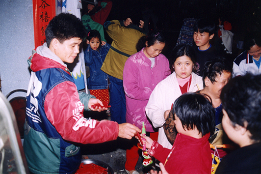
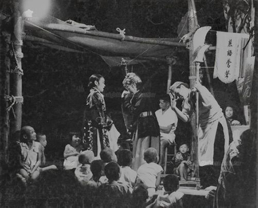
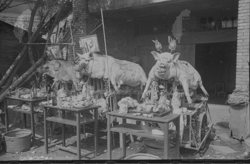

社子島最具有知名度的節活動就屬於「夜弄土地公」了！最常見的是由福安里的四個庄頭所舉辦的，分別是戲台口、港墘仔、店仔口、中窟等四個土地公聯合舉辦的，其中戲台口的土地公是一尊無臉神像頗具特色，夜弄土地公已經是每年元宵節的一大盛事。
鞭炮炸土地公
春天的社子島如果遇上過年那肯定是熱鬧，記得父親每年都會買一大堆鞭炮去土地公廟燃放，據說這樣會賺大錢，元宵節當天的「夜弄土地公」活動，更是一年一度的盛事。小時候我的古仔燈（燈籠）是用奶粉罐打洞做成的，慢慢變成火把，最後變成市府發的小燈籠，然後拿去庄頭的柑仔店就可以換取蠟燭、糖果餅乾等等，真的很有趣。
鎮安宮也有炸土地公活動
- 
以前只要提古仔燈就可以跟商家拿取蠟燭 - 
廟會常見的戲班演出 - 
開漳聖王的賽豬公
以前村里的人很有趣，一年要免費請親朋好友吃辦桌好幾次，農曆三月初三、五月初五端午節、開漳聖王聖誕、水仙尊王聖誕、還有殺豬公等等，當時感覺很多鄰居都在比誰家辦比較多桌，誰的朋友比較多。反正感覺一年到頭都在辦桌請客（還不用包紅包的那種喔）。
資料來源：富安國小60週年校慶校友陳懿墩先生訪問紀錄影片、臺北市瑠公農田水利會社子工作站文史資料

- 我們這裡有一種說法:買一大堆鞭炮去土地公廟燃放，據說這樣會賺大錢，它的舉辦時間就是在元宵節這天，它就是「夜弄土地公」活動，它是我們這裡一年一度的盛事。
- 聽學校裡的老師們說，他們去年去體驗這個活動，感到很震撼。而我還沒去過，我真的很想很想去，但是爸爸說那個活動很危險，而且他剛下班，他覺得很累。
- 有聽同學的爸爸分享，他說他小時候的古仔燈（燈籠）是用奶粉罐打洞做成的，慢慢變成火把，最後變成市府發的小燈籠。在他那個時候，帶著自己做的古仔燈（燈籠）拿去庄頭的柑仔店就可以換取蠟燭、糖果餅乾等等，真的很有趣，為什麼我們現在沒有這個活動啊？
- 又或者是以前的人的爸爸白天不需要上班嗎?還是他們可以自己去玩，不需要爸爸或是媽媽帶著呢?這個差異，我覺得非常大，就是以前的人比較放心小孩子到外面玩，而現在的爸媽非常不放心，這是我羨慕以前社子島的一點。